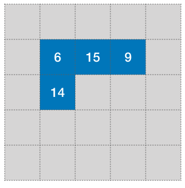
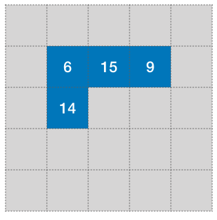
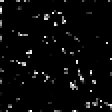

Chapter 6 Convolutional Neural Networks
Convolutional Neural Networks, or convnets, are a type of neural net especially used for processing image data.
They are inspired by the organisation of the visual cortex and mathematically based on a well understood signal processing tool: image filtering by convolution.
Convnets gained popularity with LeNet-5, a pioneering 7-level convolutional network by LeCun et al. (1998) that was successfully applied on the MNIST dataset.
6.1 Convolution Filters
Recall that in dense layers, every unit in the layer is connected to every unit in the adjacent layers:

Figure 6.1: Deep Neural Network in a Multi-Layer Perceptron Layout.
When the input is an image (as in the MNIST dataset), each pixel in
the input image corresponds to a unit in the input layer. For an input
image of dimension width by height pixels and 3 colour channels,
the input layer will be a multidimensional array, or tensor,
containing width \(\times\) height \(\times\) 3 input units.
If the next layer is of the same size, then we have up to \(({\tt width}\times {\tt height}\times 3)^2\) weights to train, which can become very large very quickly.
Figure 6.2: Dense Layer on Images.
With a fully connected layer, we don’t take advantage of the spatial structure of the image tensor.
We know, for instance, that pixel values are usually more related to their neighbours than to far away locations. We need to take advantage of this.
This is what is done in convolutional neural networks, where the units in the next layer are only connected to their neighbours in the input layer. In this case the neighbourhood is defined as a \(5\times 5\) window.

Figure 6.3: Convolution Network Architecture.
Moreover, the weights are shared across all the pixels. So, in convnets, the weights are associated to the relative positions of the neighbours and shared across all pixel locations. Let us see how they are defined.
Denote the units of a layer as \(u_{i,j,k,n}\), where \(n\) refers to the layer, \(i,j\) to the coordinates of the pixel and \(k\) to the channel of consideration.
The logit for that neuron is defined as the result of a convolution filter:
\[ \mathrm{logit}_{i, j, k, n} = w_{0,k,n} + \sum_{a=-h_1}^{h_1}\sum_{b=-h_2}^{h_2}\sum_{c=1}^{h_3} w_{a,b,c,k,n} u_{a+i,b+j,c,n-1} \]
where \(h_1\) and \(h_2\) correspond to half of the dimensions of the neighbourhood window and \(h_3\) is the number of channels of the input image for that layer. (Some of you may have noted that this is in fact not the formula for convolution but instead the formula for cross-correlation. Since convolution is just a cross-correlation with a mirrored mask, most neural networks platforms simply implement the cross-correlation so as to avoid the extra mirroring step. Both formulas are totally equivalent in practice).
After activation \(f\), the output of the neuron is simply: \[ u_{i, j, k, n} = f\left( \mathrm{logit}_{i,j,k,n} \right) \]
Consider the case of a grayscale image (1 channel) where the convolution is defined as: \[ \mathrm{logit}_{i, j, n} = u_{i+1,j,n-1} + u_{i-1,j,n-1} + u_{i,j+1,n-1} + u_{i,j-1,n-1} - 4 u_{i,j,n-1} \]
The weights can be arranged as a weight mask (also called kernel):
 


6.2 Padding
At the picture boundaries, not all neighbours are defined.
In Keras two padding strategies are possible:
padding='same' means that the values outside of image domain are
extrapolated to zero.
padding='valid' means that we don’t compute the pixels that need
neighbours outside of the image domain. This means that the picture is
slightly cropped.
Input layer. Pixels outside the image domain are marked with
'?'. After \({\tt 3}\times{\tt 3}\) convolution. Boundary pixels
require out of domain neighbours.
Each convolutional layer defines a number of convolution filters and the output of a layer is thus a new image, where each channel is the result of a convolution filter followed by activation.
Example
Next is a colour picture with a tensor of size \({\tt 443}\times {\tt 592}\times {\tt 3}\) (width=\({\tt 443}\), height=\({\tt 592}\), number of
channels=\({\tt 3}\)). The convolutional layer used has a kernel of
size \({\tt 5}\times {\tt 5}\), and produces \({\tt 6}\) different
filters. The padding strategy is set to valid thus we loose 2 pixels
on each side. The output tensor of the convolutional layer is a
picture of size \({\tt 439}\times {\tt 588}\times {\tt 6}\).
In Keras, this would be defined as follows:
This convolution layer is defined by \({\tt 3}\times {\tt 6}\times {\tt 5}\times {\tt 5} = {\tt 450}\) weights. This is only a fraction of what would be required in a dense layer.

|

|

|
||
| original | (a) | (b) | (c) | (d) |
Figure 6.4: Example of convolution outputs]
6.3 Reducing the Picture Size
If convolution filters offer a way of reducing the number of weights in the network, the number of units still remains high.
For instance, applying Conv2D(16, (5,5)) to an input tensor image of
size \({\tt 2000} \times {\tt 2000} \times {\tt 3}\) only requires \({\tt 5}\times {\tt 5}\times {\tt 3}\times {\tt 16} = {\tt 1200}\) weights to
train, but still produces \({\tt 2000} \times {\tt 2000} \times {\tt 16} = {\tt 64 million}\) units.
In this section, we’ll see how stride and pooling can be used to downsample the images and thus reduce the number of units.
6.3.1 Stride
In image processing, the stride is the distance that separates each processed pixel. A stride of 1 means that all pixels are processed and kept. A stride of 2 means that only every second pixel in both x and y directions are kept.

|
||
| (a) | (b) | (c) |
Figure 6.5: Srides of 2, 3, 4
6.3.2 Max Pooling
Whereas stride is set on the convolution layer itself, is a separate node that is appended after the conv layer. The Pooling layer operates a sub-sampling of the picture.
Different sub-sampling strategies are possible: average pooling, max pooling, stochastic pooling.
The maximum of each block is kept.
Figure 6.6: MaxPooling
Example
In the following keras code:
x = Input(shape=(32, 32, 3))
x = Conv2D(16, [5, 5], activation='relu',
padding='same', strides=1)(x)
x = MaxPooling2D(pool_size=(2, 2))(x)the original image is of size \(32\times 32\times 3\) and is transformed into a new image of size \(32\times 32\times 16\). Each of the 16 output image channels are obtained through their own \(5\times 5\times 3\) convolution filter.
Then maxpooling reduces the image size to \(16\times 16\times 16\).
6.4 Architecture Design
A typical convnet architecture for classification is based on interleaving convolution layers with pooling layers. Conv layers usually have a small kernel size (eg. \(5\times 5\) or \(3 \times 3\)). As you go deeper, the picture becomes smaller in resolution but also contains more channels.
At some point the tensor is so small (eg. \(7 \times 7\)), that it doesn’t make sense to call it a picture. You can then connect it to fully connected layers and terminate by a last softmax layer for classification:

The idea is that we start from a few low level features (eg. image edges) and as we go deeper, we built more and more features that are increasingly more complex.
Next are presented some of the early landmark convolutional networks.

Figure 6.7: LeNet-5 (LeCun, 1998). The network pioneered the use of convolutional layers in neural nets.
LeCun, Y., Bottou, L., Bengio, Y., and Haffner, P. (1998). Gradient-based learning applied to document recognition.
Figure 6.8: AlexNet (Alex Krizhevsky et al., 2012). This is the winning entry of the ILSVRC-2012 competition for object recognition. This is the network that started the deep learning revolution.
Alex Krizhevsky, Ilya Sutskever, Geoffrey E Hinton (2012) Imagenet classification with deep convolutional neural networks.

Figure 6.9: VGG (Simonyan and Zisserman, 2013). This is a popular 16-layer network used by the VGG team in the ILSVRC-2014 competition for object recognition.
K. Simonyan, A. Zisserman Very Deep Convolutional Networks for Large-Scale Image Recognition
6.5 Example: VGG16
Below is the code for the network definition of VGG16 in Keras.
# Block 1
x = Conv2D(64, (3, 3), activation='relu', padding='same', name='block1_conv1')(img_input)
x = Conv2D(64, (3, 3), activation='relu', padding='same', name='block1_conv2')(x)
x = MaxPooling2D((2, 2), strides=(2, 2), name='block1_pool')(x)
# Block 2
x = Conv2D(128, (3, 3), activation='relu', padding='same', name='block2_conv1')(x)
x = Conv2D(128, (3, 3), activation='relu', padding='same', name='block2_conv2')(x)
x = MaxPooling2D((2, 2), strides=(2, 2), name='block2_pool')(x)
# Block 3
x = Conv2D(256, (3, 3), activation='relu', padding='same', name='block3_conv1')(x)
x = Conv2D(256, (3, 3), activation='relu', padding='same', name='block3_conv2')(x)
x = Conv2D(256, (3, 3), activation='relu', padding='same', name='block3_conv3')(x)
x = MaxPooling2D((2, 2), strides=(2, 2), name='block3_pool')(x)
# Block 4
x = Conv2D(512, (3, 3), activation='relu', padding='same', name='block4_conv1')(x)
x = Conv2D(512, (3, 3), activation='relu', padding='same', name='block4_conv2')(x)
x = Conv2D(512, (3, 3), activation='relu', padding='same', name='block4_conv3')(x)
x = MaxPooling2D((2, 2), strides=(2, 2), name='block4_pool')(x)
# Block 5
x = Conv2D(512, (3, 3), activation='relu', padding='same', name='block5_conv1')(x)
x = Conv2D(512, (3, 3), activation='relu', padding='same', name='block5_conv2')(x)
x = Conv2D(512, (3, 3), activation='relu', padding='same', name='block5_conv3')(x)
x = MaxPooling2D((2, 2), strides=(2, 2), name='block5_pool')(x)
# Classification block
x = Flatten(name='flatten')(x)
x = Dense(4096, activation='relu', name='fc1')(x)
x = Dense(4096, activation='relu', name='fc2')(x)
x = Dense(classes, activation='softmax', name='predictions')(x)As you can see the network definition is rather compact. The
convolutional layers are laid out in sequence. After block1_pool,
the image tensor contains 64 channels but is halfed in width and
height. As we progress deeper, the width and height is further halved
and the number of channels/features increase. At block5_pool, the
tensor width and height is \(32\) times smaller than the original but
the number of channels/features per pixel is 512.
The last dense layers (FC1, FC2) perform the classification task
based on the visual features of block5_pool.
Let’s take the following input image (tensor size \(224\times 224 \times 3\), image has been resized to match that dimension):
Below are shown the output of some of the layers of this network.

|

|

|

|
Figure 6.10: A few output images from the 64 filters
of block1_conv2 (size \(224 \times 224 \times 64\))

|

|

|
Figure 6.11: A few output images from the 64 filters
of block2_conv2 (size \(224 \times 224 \times 64\))

|

|

|
 |
Figure 6.12: A few output images from the 64 filters of block3_conv3 (size
\(224 \times 224 \times 64\))

|

|
Figure 6.13: A few output images from the 64 filters of block4_conv3 (size
\(224 \times 224 \times 64\))

|

|

|

|

|
Figure 6.14: A few output images from the 64 filters of block5_conv3 (size
\(224 \times 224 \times 64\))
As you can see, the output of the filters become more and more sparse, that is, for the last layer, most of entries are filled with zeros and only a few features show a high response. This is promising as it helps classification if we have a clear separation between each of the features. In this case, the third filter in the last row seem to pick up the bird’s head and eyes.
6.6 Visualisation
Understanding each of the inner operations of a trained network is still an open problem. Thankfully Convolutional Neural Nets focus on images and a few visualisation techniques have been proposed. One technique (see link below) is to find an input image that maximises the activation for that specific filter. Recall that the output of ReLU and sigmoid is always positive and that a positive activation means that the filter has detected something. Thus finding the image that maximises the response from that filter will give us a good indication about the nature of that filter.
The optimisation proceeds as follows:
- Define the loss function as the mean value of the activation for that filter.
- Use backpropagation to compute the gradient of the loss function w.r.t. the input image.
- Update the input image using a gradient ascent approach, so as to maximise the loss function. Go back to 2.
A few examples of optimised input images for VGG16 are presented in the next slides.


As can be seen, the visual features picked up by the first layers are very low-level (eg. edges, corners), but as we go deeper, the features pick up much more complex texture patterns.
6.7 Take Away
Convolutional Neural Nets offer a very effective simplification over Dense Nets when dealing with images. By interleaving pooling and convolutional layers, we can reduce both the number of weights and the number of units.
The successes in Convnet applications (eg. image classification) were key to start the deep learning/AI revolution.
The mathematics behind convolutional filters were nothing new and have long been understood. What convnets have brought, is a framework to systematically train optimal filters and combine them to produce powerful high level visual features.
6.8 Useful Resources
[1] Deep Learning (MIT press) from Ian Goodfellow et al. - chapters 9, https://www.deeplearningbook.org
[2] Brandon Rohrer YT channel, https://youtu.be/ILsA4nyG7I0
[5] Stanford CS class CS231n, http://cs231n.github.io
[7] Michael Nielsen’s webpage, http://neuralnetworksanddeeplearning.com/